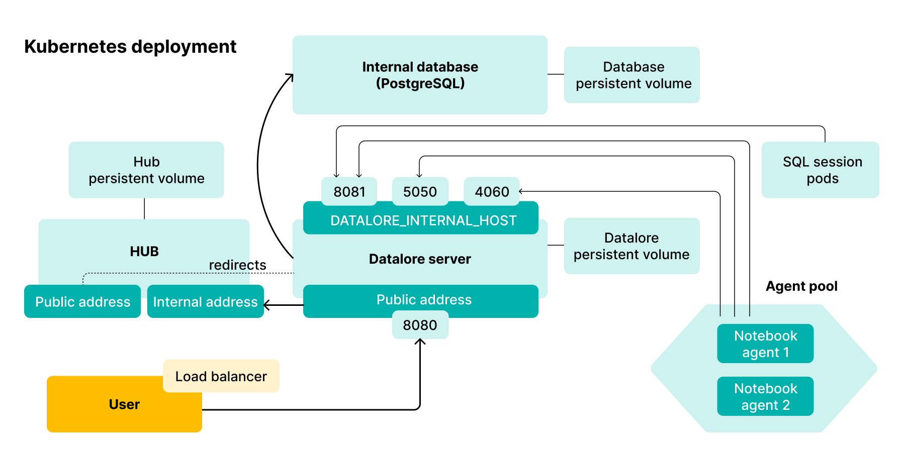
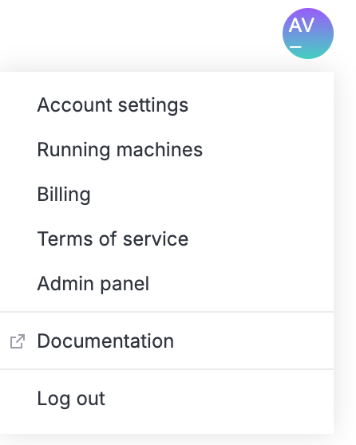

Install Datalore On-Premises on a Kubernetes cluster with Helm charts
The page guides you through installing and configuring Datalore On-Premises on a Kubernetes cluster on the platform of your choice.
Kubernetes deployment of Datalore On-Premises contains the following components:

The installation process consists of two parts:
Basic installation: to get Datalore On-Premises up and running on the platform of your choice.
Configuration procedures: to customize the installation. Some of these configurations are necessary to begin using Datalore after installation.
Prerequisites
Before you start, make sure that you have the following:
A Kubernetes cluster
kubectl installed on your machine and configured to work with this cluster
Helm
This installation was tested with Kubernetes v1.30 and Helm v3.15, but other versions may work too.
Hardware requirements
Datalore On-Premises requires resources for running both the server, database, and computations. When choosing the amount of resources, take into account your projected computations and the number of agents working in parallel.
Datalore server: 4GB of RAM (the number of CPU is irrelevant if the load is not high)
For every running notebook: from 4GB of RAM
PostgreSQL 15 database:
CPU: minimum 1 core; 2 or more cores recommended
RAM: minimum 4 GB; 8 GB recommended
Available memory: minimum 4 GB minimum, 6GB or more recommended
AWS EKS deployment limitations
Datalore's Reactive mode may not operate properly on an Amazon EKS cluster with the Amazon Linux compute nodes (default option). We recommend that you use Ubuntu 20.04 with the corresponding AMIs specifically designed for the EKS.
Essential tips for AWS EKS deployments:
To find an AMI for manual setup, select a suitable option from the worker node image list based on the cluster version and region.
Go to http://127.0.0.1:8080/ and register the first user. This user automatically receives the Super Admin role.
Add your licence. To do that, click your avatar in the upper right corner, select Admin panel | License, and enter your license key.

Optional procedures
Add public URL
To access Datalore using an address other than 127.0.0.1, add a URL without a trailing slash as the DATALORE_PUBLIC_URL parameter in the datalore.values.yaml file.
For example, if you want to use https://datalore.yourcompany.com, add the following block:
dataloreEnv:
...
# Make sure the URL doesn't have a trailing slash
DATALORE_PUBLIC_URL: "https://datalore.yourcompany.com"
Run Datalore in a non-default namespace
To deploy the Datalore server into a non-default namespace, run the following command:
To specify the non-default namespace for your agents configs, define the namespace variable in the datalore.values.yaml file as shown in the code block:
Enable an allowlist for new user registration. Only users with email addresses included in the allowlist can register.
In the values.yaml file, add the following parameter:
dataloreEnv:
...
EMAIL_ALLOWLIST_ENABLED: "true"
The Email allowlist tab will be available on the Admin panel.
Enable user filtration based on Hub group membership
By default, all Hub users can register unless you disable registration on the Admin panel. To grant Datalore access only to a specific Hub group members:
In the values.yaml file, add the following parameter:
You can configure the limit of notebook code import by setting your own value in bytes. To do that:
In the values.yaml file, add the following parameter:
dataloreEnv:
VFS_MAX_IMPORT_SOURCE_LENGTH: 'integer, prefixes (K-, M-, etc.) not supported'
AWS Fargate restrictions
AWS Fargate is a serverless compute engine for containers. Datalore On-Premises can run in Fargate, be you need to be aware of the following restrictions:
Attached files and Reactive mode do not work due to Fargate's security policies.
Spawning agents in privileged mode, which is the default setup, is not supported by Fargate.
Fargate does not support EBS volumes, which are our default volume option. As a workaround, we suggest that you set up an AWS EFS, create PersistentVolume and PersistentVolumeContainer objects, and edit the values.yaml config file as shown in the example: